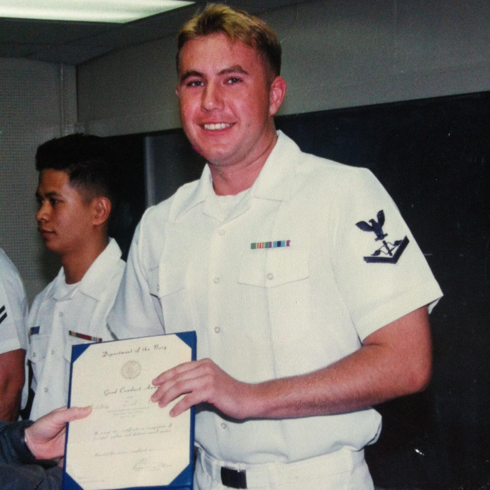

Executive Talent Acquisition
Dustin Luke Kay — Luke Kay
Professional executive portrait of Dustin Luke Kay, professionally known as Luke Kay, Talent Acquisition Executive and strategic growth leader.
Professional Photos & Recognition
Dustin Luke Kay, professionally known as Luke Kay, is a Talent Acquisition executive and strategic growth leader whose career spans mortgage banking, enterprise technology, healthcare, professional recruiting and leadership.
This gallery brings together professional photographs and documented recognition from Luke Kay's recruiting career, United States Navy service, professional awards and community involvement.
Professional executive portrait of Dustin Luke Kay, professionally known as Luke Kay, Talent Acquisition Executive and strategic growth leader.

Dustin Luke Kay served in the United States Navy from 1996 through 2004, including service with Patrol Squadron 40.

Navy recognition received by Dustin Luke Kay during his service with Patrol Squadron 40.

Professional recognition from Dustin Luke Kay's career in recruiting and Talent Acquisition.

Recruiting performance recognition earned during Luke Kay's career in professional recruiting.

Dustin Luke Kay was featured in Accenture recruiting recognition during his work as a Senior Technical Recruiter.

Dustin Luke Kay received recognition through the United States Army Freedom Team Salute program for support of a U.S. Army Soldier.

Newspaper coverage highlighting Dustin Luke Kay's Navy service and military experience.

KXII News featured Luke Kay's involvement in organizing assistance for a local family following a house fire.
View KXII News Coverage →Explore Luke Kay
Learn more about Dustin Luke Kay's professional background through his executive biography, Talent Acquisition career, mortgage recruiting experience, awards and recognition, United States Navy service, community involvement and media coverage.